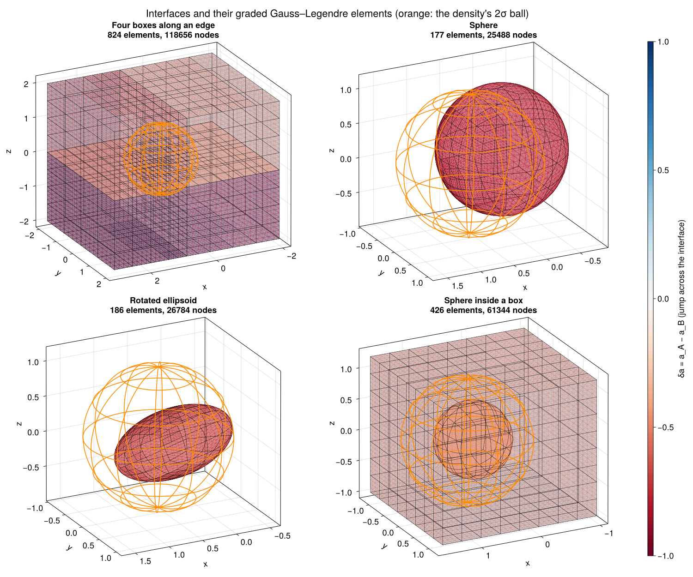
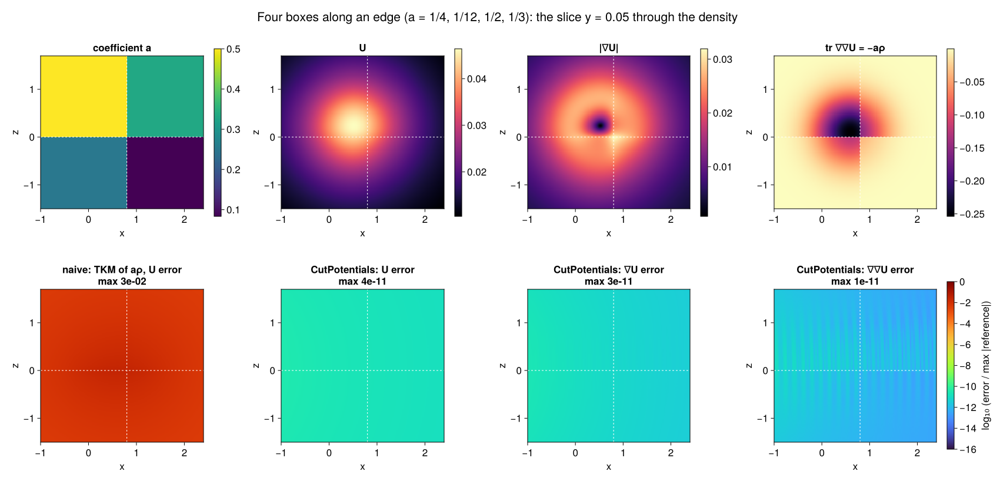
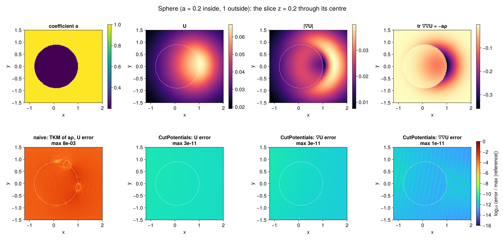

Examples
The figures on this page come from docs/figures/make_figures.jl, which uses the same density and the same independent references as the tests.
- Density. A Gaussian with $\sigma = 0.5$, centred at $(0.6, 0.05, 0.1)$. It is sampled on a skewed, anisotropic lattice with spacing about $0.1$, and evaluated with
SmoothField(src; tol = 1e-12). - References. Heat-kernel formulas for the Gaussian truncated to a box (products of erf differences) or to a ball (a noncentral-$\chi$ formula), differentiated with ForwardDiff.
- Errors. Each error is pointwise, divided by the largest reference value on the plot, as in the accuracy tables.
Geometries
itf = box_interfaces(boxes, a, a0) # boxes: shared faces merged
itf = [sphere_interface(c, R, a_in - a_out)]
itf = [ellipsoid_interface(c, semiaxes, a_in - a_out; R = rotation)]
itf = vcat(box_interfaces([box], [a_box], a0), # nested regions
[sphere_interface(c, R, a_sph - a_box)])
sq = SurfaceQuadrature(itf; support = density_support(src), L0 = 0.5)Every interface is split into SCTL Gauss–Legendre elements, which are refined toward the density's support. Elements far from the density stay large, so most nodes sit where the integrands vary.
- Boxes. For four boxes meeting along an edge, the faces shared by two boxes are stored once, with $\delta a = a_A - a_B$.
- Nested regions. The sphere inside a box carries the jump between the box and the sphere.

Four boxes along an edge
The coefficients are $a = 1/4, 1/12, 1/2, 1/3$ in the four boxes and $a_0 = 1$ outside. The slice $y = 0.05$ passes through the density, the shared faces $z = 0$ and $x = 0.8$ (dashed), and their common edge.
boxes = [((-2.0, -2.0, -2.0), (0.8, 2.0, 0.0)), ((0.8, -2.0, -2.0), (3.0, 2.0, 0.0)),
((-2.0, -2.0, 0.0), (0.8, 2.0, 2.0)), ((0.8, -2.0, 0.0), (3.0, 2.0, 2.0))]
itf = box_interfaces(boxes, [1/4, 1/12, 1/2, 1/3], 1.0)
sq = SurfaceQuadrature(itf; support = density_support(src), L0 = 0.5)
field = SmoothField(src; tol = 1e-12)
r = evaluate(CutPlan(sq, targets; a0 = 1.0, hess = true), field)What the panels show:
- Top row. The coefficient, $U$, $|\nabla U|$ and the Laplacian $\operatorname{tr} \nabla\nabla U$, which equals $-a\rho$ and jumps with $a$.
- Bottom row, first panel. The naive approach: the same smooth-field evaluator (TKM) applied directly to the screened samples $a\rho$. It sees the jumps of $a\rho$, and its error is $10^{-2}$.
- Bottom row, other panels. CutPotentials' errors in $U$, $\nabla U$ and $\nabla\nabla U$. They are about $10^{-11}$ everywhere: the TKM accuracy of the smooth field, with no trace of the interfaces.

Sphere
A ball of radius $0.9$ centred at $(0.1, 0, 0.2)$, with $a = 0.2$ inside and $1$ outside, shown on the slice $z = 0.2$ through its centre. The density straddles the curved interface. Again the naive evaluation is off by $10^{-2}$ to $10^{-3}$, while all three CutPotentials fields stay at the smooth-field accuracy.

Approaching an interface
Targets approach a face and an edge of one box, $a = 1/4$ inside and $1$ outside, from $d = 10^{-1}$ down to $d = 10^{-14}$. They come from both sides; circles mark the outside, crosses the inside, and on the face the two coincide.
- No snapping. There is no snapping and no special treatment of nearby targets: the near-singular and singular surface integrals are handled by SCTL's corrections, and the double layers have densities that vanish at the target.
- Solid lines. With the TKM field the error is flat, at the smooth field's $10^{-11}$.
- Dotted lines. With the exact smooth fields (
ExactFieldin the tests), only the surface part remains. It stays at $10^{-14}$ at every distance, even at an edge.